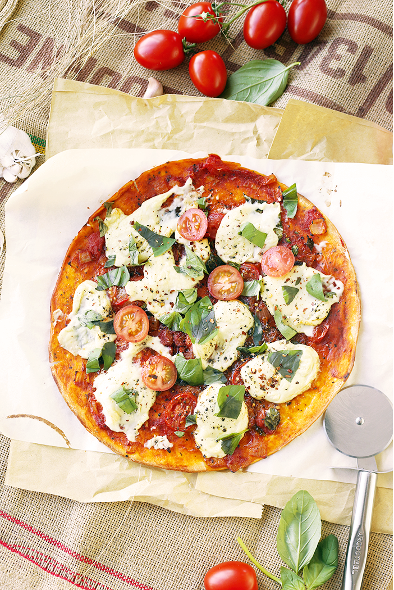

Vegan Pizza

Description
Pizza is the star of the fast-food world, and it’s many people’s go-to meal when they fancy a little slice of happiness on a Friday night.
It’s also the one dish that many people think that those on a vegan diet miss out on due to its cheesy toppings. But as we all know, that couldn’t be further from the truth!
There are so many ways to get creative with vegan pizza recipes as you can customize every element from the cheese and toppings right down to the base.
You can opt for a more traditional dough to create your base or even try something new by adding in veggies and chia seeds to add flavour and texture.
Ingredients
- 1 Storebought Vegan Pizza Base
- For Simple Tomato Sauce:
- 1 Tablespoon Olive Oil
- 1 White Onion diced
- 2 cloves Garlic minced
- 1 tin Crushed Tomatoes with Paste
- teaspoon Sugar
- 1 Tablespoon Dried Mixed Italian Herbs
- Salt/Pepper to taste
- For Vegan Mozarella: - Foxy Moxy by Vedged Out
- - 1 tablespoon Nutritional Yeast
- - 2 teaspoons Apple Cider Vinegar instead of Lemon Juice
- Cherry Tomato Slices
- Basil
- Extra Virgin Olive Oil
- Dried Chilli Pepper Flakes
Steps
- Prepare Tomato Sauce: In a pot, heat olive oil up and then sautee garlic and onions for 10 minutes or till transluscent. Add tomatoes, sugar, mixed herbs, salt and pepper in and stir to combine. Bring to a boil, then turn down to a simmer and cook for 25 minutes, uncovered.
- Prepare Vegan Mozarella:Combine all ingredients in a high power blender and blend till smooth. Transfer to a saucepan and heat over low heat, whilst continiously stirring.
- Stir until cheese has thickened into a sticky, stretch mass. Set aside.
- Assemble Pizza: Preheat oven to 250 degrees Celcious. If you have a pizza stone, go ahead and use it. Otherwise, no worries.
- Spread tomato sauce on Pizza Base and then top with dollops of Mozzarella. Scatter sliced cherry tomatoes and basil all over the pizza, and then drizzle the entire surface lightly with extra virgin olive oil and dried chilli pepper flakes.
- Bake for 12-15 minutes, or till pizza base is cooked and cheese is bubbly.
- Top with more fresh basil leaves once out of the oven. YUM!